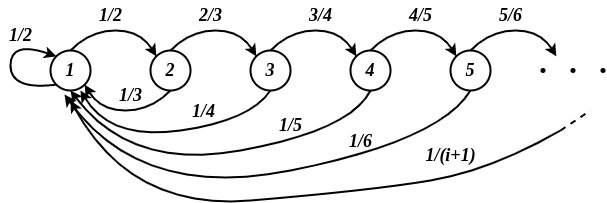

Catene di Markov
Indice
- Catene di Markov
- Matrice di Transazione
- Distribuzione marginale
- Matrice di transazione ad \(m\) passi
- Grafo associato
- Relazione \(\leftrightarrow\) di "comunicazione tra stati"
- Irriducibilità
- Stati ricorrenti e transienti
- Lemma
- Tempo medio di primo arrivo
- Stati ricorrenti positivi e ricorrenti nulli
- Lemma
- Periodicità e aperiodicità di una catena di Markov
- Ergodicità
- Corollario
- Distribuzione stazionaria (o invariante)
- Teorema 7.7 - Convergenza a distribuzioni stazionarie
- Esempi
- ES. 3 - matrice bistocastica
- Teorema 7.10 - distribuzioni reversibili
- Teorema 7.11
Catene di Markov
Sia una famiglia di variabili aleatorie \(\lbrace X_t : t \in I \rbrace\), tale che tutte le variabili aleatorie sono definite su di un insieme discreto \(V\), e con \(t \in I \subseteq \mathbb{N}\). Tale famiglia è dette catena di Markov se vale che
\begin{equation} \label{org8bfe6db} P(X_t = j \vert X_{t-1} = i, X_{t-2} = i_{t-2}, ..., X_0 = i_0 ) = P(X_t = j \vert X_{t-1} = i) = p^{(t)}_{ij} \end{equation}
Possiamo quindi vedere una catena di Markov come un processo, nel quale una variabile \(X\) cambia stato nel tempo, e dove \(X_t = j\) sta ad indicare che lo stato di \(X\) al tempo \(t\) è \(j\).
Perciò d'ora ci riferiremo a \(V\) come l'insieme degli stati.
Un'osservazione intuitiva che si può fare riguardo la definizione di catena di Markov (vedi \eqref{org8bfe6db}) è che lo stato della catena al tempo \(t\) dipende solamente dallo stato al tempo precedente \(t-1\).
Questa proprietà è anche nota come mancanza di memoria di una catena di Markov, in quanto una volta arrivati in uno stato ci si "dimentica" di tutto ciò che è accaduto in precedenza,
e lo stato successivo dipende solamente dallo stato in cui ci si trova.
Se i valori di \(p^{(t)}_{ij}\) non dipendono da \(t\), allora si parla di catene di Markov omogenee.
In tal caso scriveremo semplicemente \(p_{ij}\).
Perciò \(p_{ij}\) indica la probabilità di passare dallo stato \(i\) allo stato \(j\).
D'ora in poi ci riferiremo solo a catene omogenee.
Matrice di Transazione
Consideriamo un insieme di stati \(V = \lbrace 1,2,..., n \rbrace\) finito. Allora possiamo definire la matrice di transazione \(P \in \left[ 0,1 \right] \)
\begin{equation} P = \left ( \begin{array}{ccccc} p_{11} & ... & p_{1j} & ... & p_{1n} \\ \vdots & & \ddots & & \vdots \\ p_{i1} & ... & p_{ij} & ... & p_{in}\\ \vdots & & \ddots & & \vdots \\ p_{n1} & ... & p_{nj} & ... & p_{nn} \end{array} \right ) \end{equation}L'elemento in riga \(i\) e colonna \(j\) indica la probabilità di passare dallo stato \(i\) allo stato \(j\) (appunto \(p_{ij}\)). Osservare che la somma degli elementi di una riga deve essere pari ad 1, infatti per ogni \(i \in V\)
\begin{align*} \sum_{j \in V} p_{ij} &= \sum_{j \in V} P(X_t = j \vert X_{t-1} = i)\\ &= P\bigg( \bigcup_{j \in V} \lbrace X_t = j \rbrace \vert X_{t-1} = i \bigg)\\ &= P(X_t \in V \vert X_{t-1} = i) = 1 \end{align*}Distribuzione marginale
Per ogni tempo \(t \in I\) indichiamo con \(p_i(t)\) la probabilità che al tempo \(t\) la catena si trovi esattamente nello stato \(i\), ovvero \[ p_i(t) = P(X_t = i) \] Possiamo quindi definire una distribuzione marginale \(\overline{p}(t)\) al tempo \(t\) come il vettore \[ \overline{p}(t) = (p_1(t), ..., p_i(t), ...)_{i \in V} \]
Osservare che essendo \(\overline{p}(t)\) una distribuzione avremo che \[ \sum_{i \in V} p_i(t) = 1 \] infatti
\begin{align*} \sum_{i \in V} p_i(t) &= \sum_{i \in V} P(X_t = i)\\ &= P\bigg( \bigcup_{i \in V} \lbrace X_t = i \rbrace \bigg)\\ &= P(X_t \in V) = 1 \end{align*}Definire questa distribuzione è molto utile perché ci consente di calcolare in maniera ricorsiva lo stato di una catena al tempo \(t\). Infatti, per le probabilità totali abbiamo che \[ \underbrace{P(X_t = j)}_{p_j(t)} = \sum_{i \in V} \underbrace{P(X_t = j \vert X_{t-1} = i)}_{p_{ij}} \underbrace{P(X_{t-1} = i)}_{p_i(t)} \] Perciò applicando l'uguaglianza \(p_j(t) = \sum_{i \in V} p_i(t)p_{ij}\) ad ogni \(j \in V\) otterremo la formula ricorsiva
\begin{equation} \label{org15680d7} \overline{p}(t) = \overline{p}(t-1) P \end{equation}Matrice di transazione ad \(m\) passi
Sia un intermo \(m \geq 1\), e consideriamo la matrice \(P^{m}\) costituita dalle probabilità
\begin{equation} P^{(m)} = \left ( \begin{array}{ccccc} p^{(m)}_{11} & ... & p^{(m)}_{1j} & ... & p^{(m)}_{1n} \\ \vdots & & \ddots & & \vdots \\ p^{(m)}_{i1} & ... & p^{(m)}_{ij} & ... & p^{(m)}_{in}\\ \vdots & & \ddots & & \vdots \\ p^{(m)}_{n1} & ... & p^{(m)}_{nj} & ... & p^{(m)}_{nn} \end{array} \right ) \end{equation}\[ p^{(m)}_{ij} = P(X_{t + m} = j \vert X_t = i) \]
Anche in questo caso avremo che ogni riga è una distribuzione, infatti per ogni riga \(i\) avremo che
\begin{align*} \sum_{j \in V} p^{(m)}_{ij} &= \sum_{j \in V} P(X_{t + m} = j \vert X_t = i)\\ &= P\bigg( \bigcup_{j \in V} \lbrace X_{t + m} = j \rbrace \vert X_t = i \bigg)\\ &= P(X_{t + m} \in V \vert X_t = i) = 1 \end{align*}
Abbiamo quiandi generalizzato la matrice di transazione \(P = P^{(1)}\) semplicemente ponendo \(m = 1\).
Consideriamo ora un \(m \geq 2\) ed una partizione degli eventi \(\lbrace \lbrace X_{t+m} = h \rbrace : h \in V \rbrace\) ed applichiamo i seguenti calcoli
\begin{align*} p^{(m)}_{ij} &= P(X_{t+m} = j \vert X_t = i)\\ &= \sum_{h \in V} P(X_{t+m} = j, X_{t+m-1} = h \vert X_t = i)\\ &= \sum_{h \in V} \frac{P(X_{t+m} = j, X_{t+m-1} = h, X_t = i)}{P(X_t = i)}\\ &= \sum_{h \in V} \frac{P(X_{t+m} = j, X_{t+m-1} = h, X_t = i)}{P(X_t = i)} \cdot \overbrace{ \frac{P(X_{t+m-1} = h, X_t = i)}{P(X_{t+m-1} = h, X_t = i)} }^{= 1}\\ &= \sum_{h \in V} \frac{P(X_{t+m} = j, X_{t+m-1} = h, X_t = i)}{P(X_{t+m-1} = h, X_t = i)} \cdot \frac{P(X_{t+m-1} = h, X_t = i)}{P(X_t = i)}\\ &= \sum_{h \in V} P(X_{t+m} = j \vert X_{t+m-1} = h, X_t = i)P(X_{t+m-1} = h \vert X_t = i) \end{align*}A questo punto sfruttando la mancanza di memoria delle catene di Markov avremo che \[ P(X_{t+m} = j \vert X_{t+m-1} = h, X_t = i) = P(X_{t+m} = j \vert X_{t+m-1} = h) = p_{hj} \] mentre per definizione matrice di transizione a \(m\) passi \[ P(X_{t+m-1} = h \vert X_t = i) = p^{(m-1)}_{ih} \]
Sostituendo quindi nell'espressione otteremo la seguente uguaglianza
\[
p^{(m)}_{ij} = \sum_{h \in V} p^{(m-1)}_{ih} p_{hj}
\]
per ogni coppia di \(i,j \in V\).
Al variare di \(i,j\), tale relazione ci consente di ricavare la seguente nuova relazione relazione \[ P^{(m)} = P^{(m-1)}P \]
A questo punto, ponendo \(P = P^{(1)}\) possiamo dire che per ogni \(m \geq 1\) è vero che \[ P^{(m)} = P^m \]
In conclusione, possiamo anche dare una generalizzazione della formula \eqref{org15680d7}. Infatti riapplicandola \(m\) volte avremo che
\begin{align*} \overline{p}(t) &= \overline{p}(t-1) P = \overline{p}(t-2) PP\\ &\\ &= \; ... \; = \overline{p}(t-m) \underbrace{P...P}_{m \text{ volte}}\\ &\\ &= \overline{p}(t-m) P^m = \overline{p}(t-m) P^{(m)} \end{align*}Grafo associato
È possibile associare ad una catena di Markov omogenea un grafo diretto dove:
- l'insieme dei nodi corrisponde con l'insieme degli stati \(V\).
- per ogni coppia di nodi \(i,j\) esiste l'arco diretto \((i,j) \in E\) se \(p_{ij} > 0\).
- ogni arco \((i,j)\) è pesato col valore \(p_{ij}\).
[mettere immagine]
Relazione \(\leftrightarrow\) di "comunicazione tra stati"
Dati due stati \(i,j \in V\), si dice che essi comunicano se esistono due interi \(n,m\) tali che \(p^{(n)}_{ij} > 0\) e \(p^{(m)}_{ji} > 0\).
Ovvero sia la probabilità di raggiungere lo stato \(j\) partendo da \(i\), sia la probabilità di raggiungere lo stato \(i\) partendo dallo stato \(j\), sono non nulle.
In simboli diremo che \(i \leftrightarrow j\).
Equivalentemente possiamo vedere questa relazione come la presenza di cammini che collegano \(i\) e \(j\) nel grafo associato alla catena.
Ovvero \(i \leftrightarrow j\) se e solo se nel grafo associato alla catena, \(i\) e \(j\) sono fortemente connessi1.
Osservare che la relazione \(\leftrightarrow\) è una relazione d'equivalenza, ovvero è riflessiva, simmetrica e transitiva.
- per la riflessività basta porre \(n = m = 0\) e otteremo che \(p^{(0)}_{ii} = 1 > 0\).
- sicuramente se \(i \leftrightarrow j\) allora è certamente vero \(j \leftrightarrow i\), infatti basta inverire i ruoli di \(n\) ed \(m\).
- infine si vuole dimostrare che se \(i \leftrightarrow j\) e \(j \leftrightarrow h\) allora \(i \leftrightarrow h\). Se \(i \leftrightarrow j\) e \(j \leftrightarrow h\) sono veri, allora sicuramente esistono dei \(n_1, n_2, m_1, m_2\) tali che "\(p^{(n_1)}_{ij} > 0\), \(p^{(m_1)}_{ji} > 0\)" e "\(p^{(n_2)}_{jh} > 0\), \(p^{(m_2)}_{hj} > 0\)". Allora avremo che \[ p^{(n_1 + n_2)}_{ih} = \sum_{r \in V} p^{(n_1)}_{ir}p^{(n_2)}_{rh} \geq \underbrace{p^{(n_1)}_{ij}}_{> 0} \underbrace{p^{(n_2)}_{jh}}_{> 0} > 0 \] Simmetricamente per \(m_1, m_2\).
Irriducibilità
Una matrice di Markov omogenea si dice irriducibile se \(V\) risulta essere un una classe d'equivalenza rispetto a \(\leftrightarrow\). Analogamente, c'è irriducibilità se e solo se il grafo inerente risulta essere fortemente connesso.
Stati ricorrenti e transienti
Sia \(r^t_{ij}\) la probabilità che partendo dallo stato \(i\) si raggiunge per la prima volta lo stato \(j\) dopo \(t\) passi. \[ r^t_{ij} := P(X_t=j, X_{t-1} \neq j, ..., X_1 \neq j \vert X_0 = i) \] Uno stato \(i \in V\) si dice
- ricorrente se è certo che una volta raggiunto \(i\) prima o poi si ritransita da \(i\), ovvero se \[ \sum_{t \geq 1} r^t_{ii} = 1 \]
- transiente se non è detto che una volta raggiunto \(i\) prima o poi si ritransita da \(i\), ovvero se \[ \sum_{t \geq 1} r^t_{ii} < 1 \]
Lemma
Gli stati di una classe di equivalenza di \(\leftrightarrow\), ovvero tutti i nodi di una stessa componente fortemente connessa nel grafo associato alla catena, sono tutti dello stesso tipo: o transienti o ricorrenti.
Proof
Supponiamo per assurdo, che in una stessa classe di equivalenza di \(\leftrightarrow\), esista uno stato \(i\) transiente e uno stato \(j\) ricorrente (con \(i \neq j\) ovviamente).
Dato che \(i \leftrightarrow j\) certamente esistono due \(n, m \geq 1\) tali che \(p^{(n)}_{ij} > 0\) e \(p^{(m)}_{ji} > 0\).
Considerando ogni tempo \(t \geq 1\), lo stato \(i\) verrà visitato un numero finito di volte (perché transiente) mentre \(j\) un numero infinito (perché ricorrente).
A questo punto, ogni volta che la catena raggiunge lo stato \(j\) si può pensare di effettuare un esperimento aleatorio Bernulliano con due risultati:
- successo
- se dopo \(m\) passi raggiungo lo stato \(i\), e ciò accade con probabilità \(p^{(m)}_{ji} > 0\).
- fallimento
- se dopo \(m\) passi non raggiungo lo stato \(i\), e ciò accade con probabilità \(1 - p^{(m)}_{ji} > 0\).
Ripetendo questo esperimento ogni volta che la catena raggiunge \(j\), possiamo pensare ad un unico esperimento geometrico, con infiniti tentativi. Dati appunto gli infiniti tentativi, e dato che la probabilità di successo è non nulla, allora prima o poi si raggiungerà lo stato \(i\), ovvero la probabilità che da un certo istante in poi \(i\) non venga più raggiunto è nulla. Lo stato \(i\) quindi non può essere transiente se \(j\) è ricorrente \(\square\).
Tempo medio di primo arrivo
Sia \(h_{ij}\) il tempo medio di primo arrivo in \(j\) partendo da \(i\). Esso è quindi definito come \[ h_{ij} := \begin{cases} \sum_{t \geq 1} t \cdot r^t_{ij} &\mbox{se } \sum_{t \geq 1} r^t_{ij} = 1\\ \infty &\mbox{se } \sum_{t \geq 1} r^t_{ij} < 1 \end{cases} \] Se invece \(i = j\) si parla di tempo di primo ritorno in \(i\).
Stati ricorrenti positivi e ricorrenti nulli
Sia uno stato \(i \in V\) ricorente. Allora \(i\) si dice ricorrente positivo se \(h_{ii} < \infty\), mentre si dice ricorrente nullo se \(h_{ii} = \infty\).
Esempio stato ricorrente nullo
Sia \(V = \lbrace 1, 2, ... \rbrace\) è consideriamo la seguente matrice di transizione. \[ p_{ij} := \begin{cases} \frac{i}{i+1} &\mbox{se } j = i + 1\\ \frac{1}{i+1} &\mbox{se } j = 1\\ 0 &\mbox{altrimenti} \end{cases} \]

Figura 1: Grafo associato.
Il grafo è irriducibile, perciò sappiamo che gli stati sono tutti di uno stesso tipo: tutti ricorrenti o tutti transienti.
Perciò, concentriamoci solamente sullo stato \(i = 1\), e calcoliamo il valore di \(r^t_{11}\) la variare di \(t \geq 1\).
Per \(t = 1\) avremo semplicemente che \[ r^1_{11} = P(X_1 = 1 \vert X_0 = 1) = p_{11} = \frac12 \]
Consideriamo invece \(t \geq 2\)
\begin{align*} r^t_{11} &= P(X_t = 1, X_{t-1} = t, ..., X_2 = 3, X_1 = 2 \vert X_0 = 1)\\ &= \bigg( \prod_{i=1}^{t-1} p_{i,i+1} \bigg) \cdot p_{t1}\\ &= \bigg( \prod_{i=1}^{t-1} \frac{i}{i+1} \bigg) \cdot \frac{1}{t+1}\\ &= \frac{(t-1)!}{t!} \cdot \frac{1}{t+1}\\ &= \frac{(t-1)!}{(t+1)!} = \frac{1}{t(t+1)} \end{align*}Osservare che la formula calcolata per \(t \geq 2\) vale anche per \(t = 1\). Perciò possiamo affermare che \[ r^t_{11} = \frac{1}{t(t+1)} \;\; \forall t \geq 1 \] È possibile dimostrare che lo stato 1 è ricorrente, ovvero che \(\sum_{t \geq 1} r^t_{11} = 1\), infatti
\begin{align*} \sum_{t \geq 1} r^t_{11} &= \sum_{t \geq 1} \frac{1}{t(t+1)}\\ &= \lim_{n \to \infty} \sum_{t = 1}^{n} \frac{1}{t(t+1)}\\ &= \lim_{n \to \infty} \sum_{t = 1}^{n} \frac{1}{t} - \frac{1}{t+1}\\ &= \lim_{n \to \infty} \left( 1 - \frac{1}{2} + \frac{1}{2} - \frac{1}{3} + \frac{1}{3} - ... - \frac{1}{n} + \frac{1}{n} - \frac{1}{n+1} \right)\\ &= \lim_{n \to \infty} \left( 1 - \frac{1}{n+1} \right) = 1 \end{align*}Infine si può dimostrare che lo stato 1 è nullo, ovvero \(h_{11} = \infty\). Infatti \[ h_{11} = \sum_{t \geq 1} t \cdot r^t_{11} = \sum_{t \geq 1} \frac{t}{t(t+1)} = \sum_{t \geq 1} \frac{1}{t+1} = \infty \]
Lemma
Sia \(V\) un insieme di stati finito. Allora avremo che:
- almeno uno stato è ricorrente.
- tutti gli stati ricorrenti sono ricorrenti positivi.
Periodicità e aperiodicità di una catena di Markov
Uno stato \(j\) è detto periodico se esiste un \(\Delta_j > 1\) tale che \[ P(X_{t+s} = j \vert X_t = j) = 0 \implies \Delta_j \;\; \not\vert \;\; s\\ \Delta_j \;\; \vert \;\; s \implies P(X_{t+s} = j \vert X_t = j) > 0 \] In termini semplici, \(j\) è periodico se:
- se la probabilità di ritornare in \(j\) (partendo da \(j\)) dopo \(k \cdot \Delta_j\) passi è non nulla (per ogni \(k \geq 1\))
- metre la probabilità di ritornare in \(j\) dopo \(k \neq \Delta_j\) passi è sempre nulla.
Un modo alternativo di vedere la periodicità di uno stato \(j\) è la seguente:
consideriamo un \(\Delta_j\) definito come
\[
\Delta_j := M.C.D. \lbrace s \geq 1 : p^{(s)}_{jj} > 0 \rbrace
\]
Se \(\Delta_j = 1\) allora \(j\) è aperiodico, altrimenti è periodico di periodo \(\Delta_j\).
Una catena di Markov si dice periodica se tutti i suoi stati sono periodici. Contrariamente si dice aperiodica se anche un solo stato è aperiodico.
Ergodicità
Uno stato \(j\) che è aperiodico e ricorrente positivo è detto ergodico. Analogamente una catena è detta ergodica se tutti i suoi stati sono ergodici.
Corollario
Sia \(V\) un insieme di stati finito.
Sia la catena omogenea \(\lbrace X_t : t \geq 1 \rbrace\) definita su \(V\).
Se tale catena irriducibile e aperiodica allora essa è anche ergodica.
Proof:
Per ipotesi di irriducibilità sappiamo che il grafo associato è fortemente connesso, perciò tutti gli stati appartengono alla stessa classe d'equivalenza.
Siccome \(V\) è finito sappiamo che esiste almeno uno stato ricorrente.
Inoltre sappiamo che gli stati di una stessa componente sono tutti dello stesso tipo.
Perciò abbiamo che tutti gli stati della catena sono ricorrenti.
Inoltre, siccome gli stati sono finiti, avremo che sono ricorrenti positivi.
Infine, dato che per ipotesi tutti gli stati sono aperiodici, avremo che tutti gli stati sono apreiodici e ricorrenti positivi:
ergo tutti gli stati sono ergodici \(\square\).
Distribuzione stazionaria (o invariante)
Consideriamo una catena di Markov omogenea definita sull'insieme di stati \(V\), e con matrice di transizione \(P\). Allora una distribuzione \(\overline{\pi} = (\pi_i)_{i \in V}\) è detta stazionaria (o invariante) se punto fisso del seguente sistema \[ \overline{\pi} = \overline{\pi}P \]
Teorema 7.7 - Convergenza a distribuzioni stazionarie
Sia una catena di Markov irriducibile ed ergodica, definita su un insieme di stati \(V\) finito. Allora:
- Esiste un'unica distribuzione stazionaria \(\overline{\pi} = (\pi_i)_{i \in V}\).
- Per ogni coppia di stati \(i,j \in V\) esiste il limite \[ \lim_{t \to \infty} p_{ji}^{(t)} = \pi_i = \frac{1}{h_{ii}} \]
Oss: Quindi, sotto le ipotesi del teorema, la probabilità di essere in un certo stato \(i\) pertempi grandi è un valore vicino a \(\pi_i\) e non dipende dal punto di partenza della catena.
Osservazioni su teorema 7.7
- Le condizioni del teorema equivalgono a richiedere l' aperiodicità della catena.
- Dato che \(V\) è finito, l'esistenza di alemno una distribuzione stazionaria è garantita in ogni caso.
- Dato che \(V\) è finito, esiste almeno una classe d'equivalenza rispetto a \(\leftrightarrow\) costituita da tutti stati ricorrenti. Inoltre, una volta che la catena raggiunge uno di questi stati, non ne uscirà mai più. Ognuna di queste classi consente di individuare una sottocatena irriducibile e con stati ricorrenti; quindi il Teorema 7.7 si può applicare a ciascuna di queste sottocatene nei casi in cui si abbia aperiodicità.
- Supponiamo di avere una catena con stati finiti \(V\) tale che
\[
V \equiv T \cup C_1 \cup ... \cup C_k
\]
dove \(T\) è l'insieme di tutti gli stati transienti, mentre \(C_1, ..., C_k\) sono le classi d'equivalenza rispetto a \(\leftrightarrow\), costituite da da soli stati ricorrenti.
Quindi tali componenti non comunicano mai tra di loro.
Ogni distribuzione stazionaria \(\overline{\pi} = (\pi_i)_{i \in V}\) è una particolare combinazione lineare delle distribuzioni stazionarie sulle componenti \(C_1, ..., C_k\), e con 0 sugli stati di \(T\). Ovvero \[ \overline{\pi} = \sum_{j = 1}^k \alpha_j \overline{\pi}^{(j)} \] dove:- \(\alpha_1, ..., \alpha_k \geq 0\)
- \(\sum_{j=1}^k \alpha_j = 1\)
- \(\overline{\pi}^{(j)} = (\pi^{(j)}_i)_{i \in V}\) è l'unica distribuzione stazionaria della componente \(C_j\), e con \(\pi^{(j)}_i = 0\) se \(i \not\in C_j\).
Nelle ipotesi del teorema 7.7 possiamo dire che, qualunque sia la distribuzione iniziale \(\overline{p}(0)\), si ha che \[ \lim_{t \to \infty} \mathbb{E}\left[ f(X_t) \right] = \sum_{i \in V} f(i) \pi_i \] qualunque sia la funzione \(f : V \to \mathbb{R}\). Infatti
\begin{align*} \mathbb{E}\left[ f(X_t) \right] &= \sum_{i,j \in V} f(i) P(X_0 = j, X_t = i)\\ &= \sum_{i,j \in V} f(i) P(X_0 = j, X_t = i)\\ &= \sum_{i,j \in V} f(i) P(X_t = i \vert X_0 = j)P(X_0 = j)\\ &= \sum_{i,j \in V} f(i) p^{(t)}_{ji}p_j(0)\\ &= \sum_{j \in V} p_j(0) \sum_{i \in V} f(i) p^{(t)}_{ji} \end{align*}Essendo \(V\) finito, possiamo scambiare l'ordine del limite da fuori le sommatorie a denstro, ottenedo così
\begin{align*} \lim_{t \to \infty} \mathbb{E}\left[ f(X_t) \right] &= \lim_{t \to \infty} \sum_{j \in V} p_j(0) \sum_{i \in V} f(i) p^{(t)}_{ji}\\ &= \sum_{j \in V} p_j(0) \lim_{t \to \infty} \sum_{i \in V} f(i) p^{(t)}_{ji}\\ &= \sum_{j \in V} p_j(0) \sum_{i \in V} f(i) \lim_{t \to \infty} p^{(t)}_{ji}\\ &= \sum_{j \in V} p_j(0) \sum_{i \in V} f(i) \pi_i\\ &= \sum_{i \in V} f(i) \pi_i \end{align*}
Esempi
ES. 1
Consideriamo la seguente catena di Markov omogenea definita su \(V = \lbrace 1,2 \rbrace\), con la seguente matrice di transizione
\begin{equation*} P = \left ( \begin{array}{cc} 0 & 1 \\ 1 & 0 \end{array} \right ) \end{equation*}- Verificare che non esiste \(\lim_{t \to \infty} p^{(t)}_{ji}\), per qualunque \(i,j \in V\).
- Verificare che la catena ha periodo 2.
- Soluzione 1
Consideriamo la matrice di transizione al variare di \(t\)
\begin{equation*} P^{(2)} = P^2 = \left ( \begin{array}{cc} 0 & 1 \\ 1 & 0 \end{array} \right ) \left ( \begin{array}{cc} 0 & 1 \\ 1 & 0 \end{array} \right ) = \left ( \begin{array}{cc} 1 & 0 \\ 0 & 1 \end{array} \right ) = I \end{equation*}\[ P^{(3)} = P^3 = P^2P = IP = P \] \[ P^{(4)} = P^4 = P^3P = PP = I \] Si può quindi dedurre che \[ P^{(t)} = \begin{cases} I &\mbox{se } t \mbox{ è pari}\\ P &\mbox{se } t \mbox{ è dispari} \end{cases} \] da cui segue che \[ p^{(t)}_{11} = p^{(t)}_{22} = \begin{cases} 1 &\mbox{se } t \mbox{ è pari}\\ 0 &\mbox{se } t \mbox{ è dispari} \end{cases} \] e \[ p^{(t)}_{12} = p^{(t)}_{21} = \begin{cases} 0 &\mbox{se } t \mbox{ è pari}\\ 1 &\mbox{se } t \mbox{ è dispari} \end{cases} \] In conclusione il limite in questione non esiste, in quanto il valore di \(p^{(t)}_{ji}\) oscilla sempre tra 0 e 1.
- Soluzione 2
Banalmente, se si osserva il grafo associato a \(P\) si può osservare che partendo da 1 non è possibile ritornarci con un numero dispari di passi. Analogamente per lo stato 2. Ergo, la catena ha periodo 2.
ES. 2 - distribuzione stazionaria
Sia la catena definita su \(V = \lbrace 0,1 \rbrace\) con
\begin{equation*} P = \left ( \begin{array}{cc} 1-p & p \\ q & 1-q \end{array} \right ) \end{equation*}
per qualche \(p,q \in (0,1)\).
Si vuole calcolare la distribuzione stazionaria per \(P\).
- Soluzione
Certamente \(\overline{\pi} = (\pi_0, \pi_1)\) è stazionaria se
\begin{equation*} (\pi_0, \pi_1) = (\pi_0, \pi_1) \left ( \begin{array}{cc} 1-p & p \\ q & 1-q \end{array} \right ) \end{equation*}e se \[ \pi_0 + \pi_1 = 1 \] Iniziamo quindi col risolvere il primo sistema
\begin{cases} \pi_0 &= \pi_0 (1-p) + \pi_1 q\\ \pi_1 &= \pi_0 p + \pi_1 (1-q) \end{cases} \begin{cases} \pi_0 p &= \pi_1 q\\ \pi_1 q &= \pi_0 p \end{cases} \begin{cases} \pi_0 &= \frac{q}{p} \pi_1\\ \pi_1 &= \frac{p}{q} \pi_0 \end{cases}Ora è necessario verificare il vincolo \(\pi_0 + \pi_1 = 1\)
\begin{align*} \pi_0 + \pi_1 &= 1\\ \frac{q}{p} \pi_1 + \pi_1 &= 1\\ \frac{q + p}{p} \pi_1 &= 1\\ \pi_1 &= \frac{p}{p + q}\\ \implies \pi_0 &= \frac{q}{p + q} \end{align*}
ES. 3 - matrice bistocastica
Una matrice \(A\) è detta bistocastica se la somma degli elementi per ogni riga e per ogni colonna è sempre 1. Nel caso delle matrici di transizione \(P\) è necessario che solo le somme degli elementi per colonna sia pari ad 1, in quanto per definizione le righe sono delle distribuzioni. Sia un insieme di stati \(V\) finito e consideriamo la distribuzione uniforme \[ \pi_i = \frac{1}{\vert V \vert} \;\; \forall i \in V \] Dimostrare che \(\overline{\pi} = (\pi_i)_{i \in V}\) è stazionaria.
- Soluzione
Si vuole dimostrare che \(\overline{\pi} = \overline{\pi}P\). Consideriamo il solo elemento \(i\)-esimo. Se \(\overline{\pi}\) è stazionaria allora è vero che
\begin{align*} \pi_i &= \sum_{j \in V} \pi_j p_{ji}\\ &= \sum_{j \in V} \frac{1}{\vert V \vert} p_{ji}\\ &= \frac{1}{\vert V \vert} \underbrace{\sum_{j \in V} p_{ji}}_{= 1}\\ &= \frac{1}{\vert V \vert} = \pi_i \;\;\; \square \end{align*}
Teorema 7.10 - distribuzioni reversibili
Sia \(\overline{\pi} = (\pi_i)_{i \in V}\) una distribuzione su \(V\), e supponiamo che sia anche reversibile, ovvero che \[ \pi_i p_{ij} = \pi_j p_{ji} \;\; \forall i,j \in V \] Allora \(\overline{\pi}\) è anche stazionaria.
Proof:
\begin{align*} \pi_i &= \sum_{j \in V} \pi_j p_{ji}\\ &= \sum_{j \in V} \pi_i p_{ij}\\ &= \pi_i \underbrace{\sum_{j \in V} p_{ij}}_{= 1} = \pi_i \;\;\; \square \end{align*}Teorema 7.11
Supponiamo di avere una catena irriducibile e aperiodica. Allora vale che:
- Nel caso di \(V\) finito vale che:
- c'è ergodicità.
- per ogni \(i,j \in V\) esiste \(\lim_{t \to \infty} p^{(t)}_{ji}\) indipendente da \(j\).
- si ha un'unica distribuzione stazionaria \(\overline{\pi}\).
- per ogni \(i,j \in V\) avremo che \(\lim_{t \to \infty} p^{(t)}_{ji} = \pi_i > 0\).
- Nel caso di \(V\) infinito vale che:
- non esistono stati ricorrenti positivi.
- per ogni \(i,j \in V\) si ha \(\lim_{t \to \infty} p^{(t)}_{ji} = 0\).
- non esiste distribuzione stazionaria.
Dimostrazione omessa.
Note a piè di pagina:
esiste un cammino che da \(i\) arriva a \(j\), e ne esiste un altro che da \(j\) arriva ad \(i\).